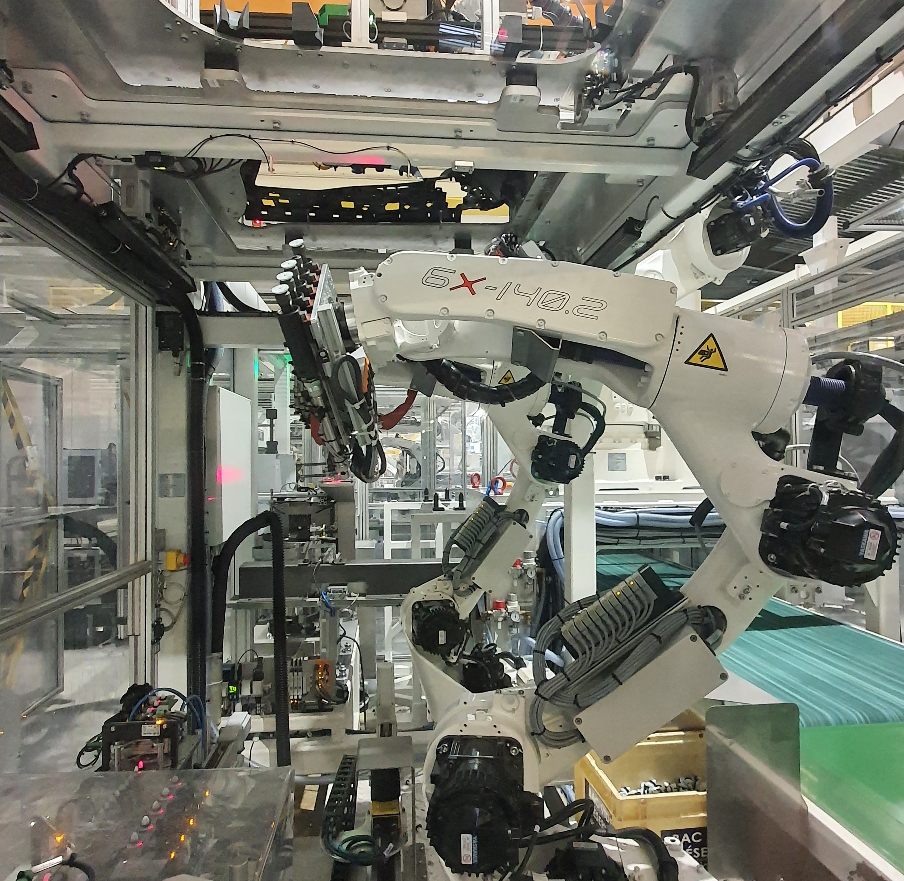
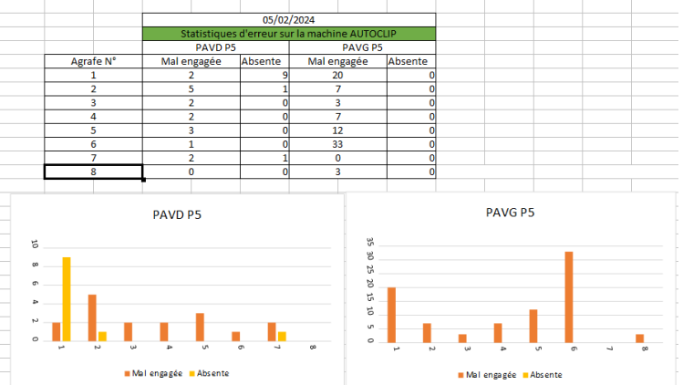
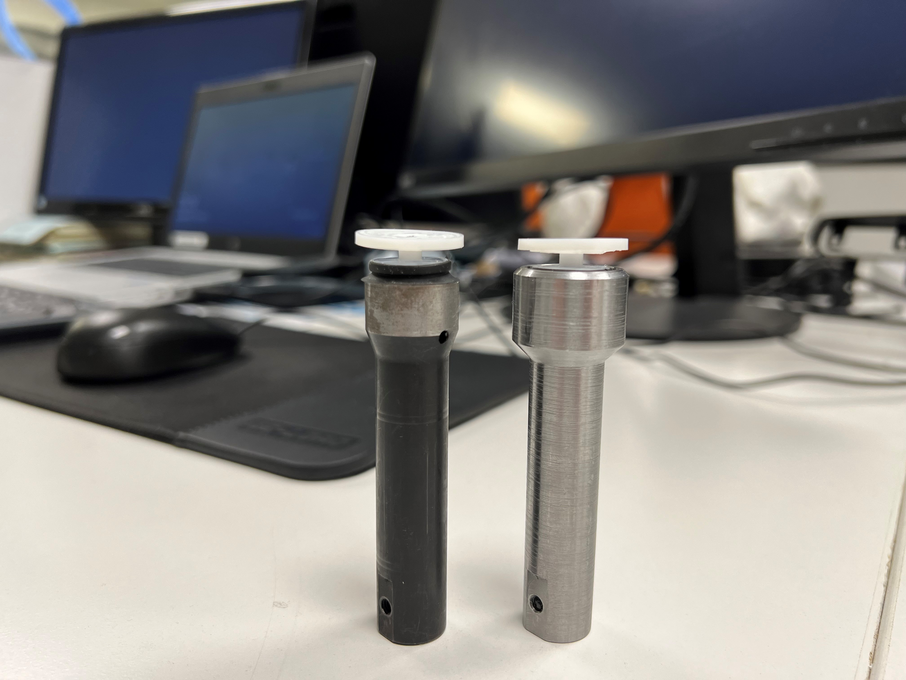
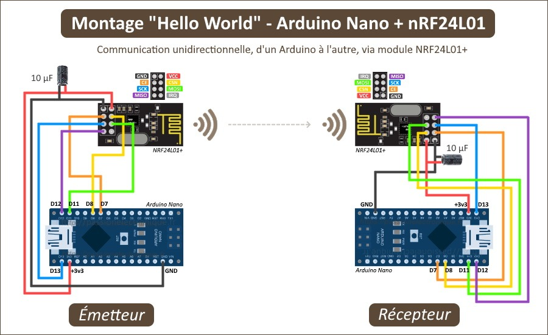
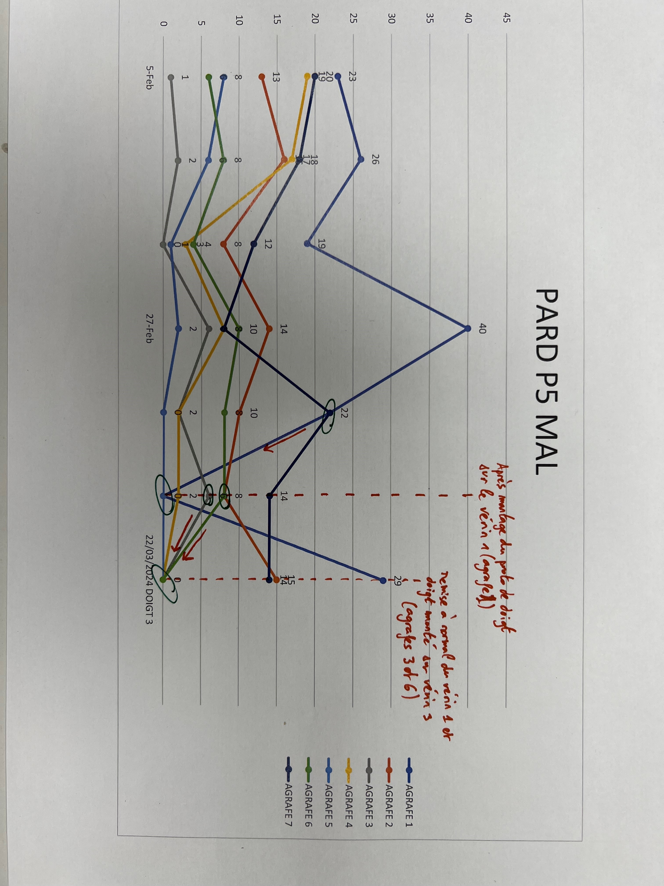
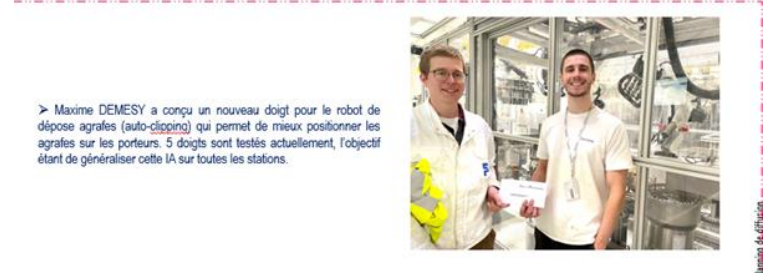
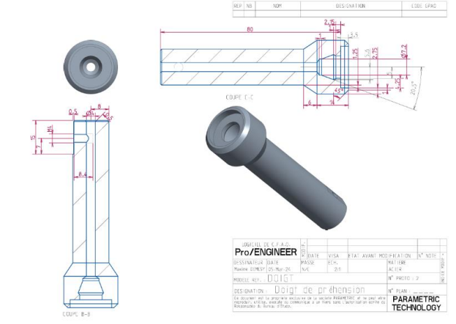

At the Forvia Étupes plant, the "AUTOCLIP" machine, equipped with a 6-axis robotic arm, is responsible for assembling door panels. The process suffered from a critical failure rate when inserting plastic fasteners.
The first phase consisted of performing a comprehensive statistical mapping of the errors ("misaligned" or "missing" fasteners) based on their position on the panel (Front Right/Front Left doors), while measuring the required insertion forces (between 14N and 21N).


Rather than continuously recalibrating the robot's trajectory, I redesigned the end-effector mechanics. Using Pro/ENGINEER (PTC Creo), I modeled a new "gripper finger".
The innovation lies in machining a specific internal steel chamfer. This funnel shape mechanically guides the fastener and physically absorbs micro-positioning errors (tolerance +/- 1mm). The new finger also covers the fastener better, allowing it to withstand higher forces before slipping.
Since the machine was working "blind", it needed the ability to verify its own work. I developed an IoT solution (Arduino Nano, NRF24L01+ radio module, and MPU-6050) to capture the characteristic acceleration generated by the mechanical "click" during locking.
The algorithm allows the robot to react in real-time:

Data Processing: Measurements are transmitted wirelessly to a computer and processed in Excel using the PLX-DAQ macro. The integration of Pattern Recognition algorithms (R-CNN, YOLO v2) in MATLAB was explored to classify complex errors.
Autonomy: With the system consuming 33.6 mA, I designed a custom power supply using two 3.7V LiPo batteries (250mAh) in series, guaranteeing over 3 hours of autonomy for testing.
Wear Measurement: To validate the mechanical impact of the new gripper fingers, I added a thin-film resistive pressure sensor. Integrated between the cylinder and the slide with a 10 kOhm resistor, it quantifies the normal force and helps anticipate machine wear.
The implementation of this new system had an immediate impact on the production line. From the first real-world production tests (1-hour run), the error rate dropped drastically, achieving a 100% success rate on the most critical clipping points.
For this engineering initiative combining clever mechanical redesign and IoT validation, the project was awarded the "Improvement Idea of the Month" prize by the plant management.


Detailed views and dimensions of the new machined steel gripper finger.
